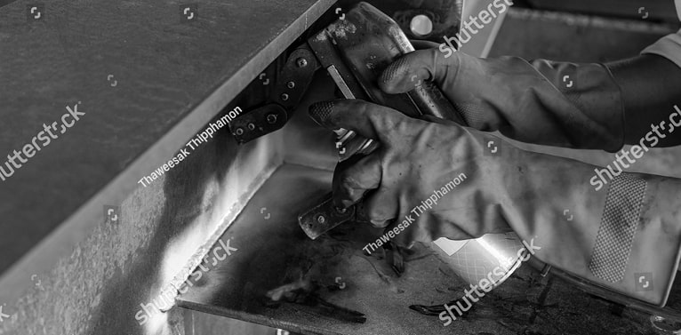
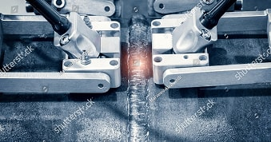
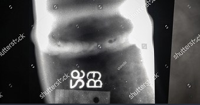
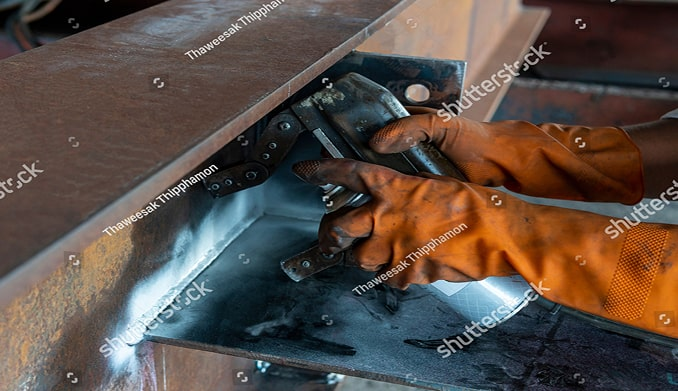
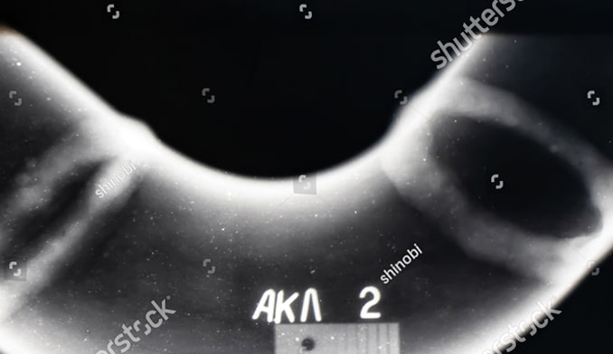
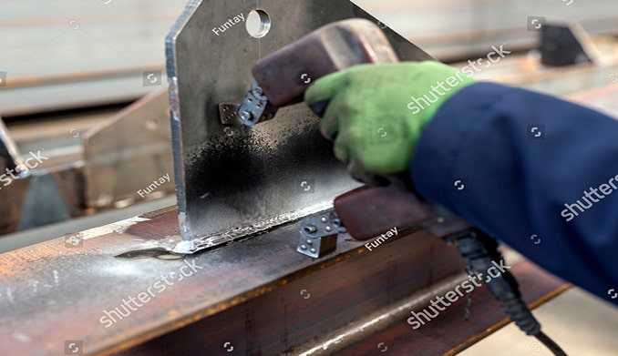

Радиографический контроль сварных швов без искажений результата
рентген/гамма‑контроль дает объективное изображение внутренней структуры шва, устраняя спорные трактовки и фиксируя качество в виде радиограммы
Запросить расчет РК по вашему объекту

о методе и его силе

радиографический контроль — метод НК,
при котором через сварной шов пропускается излучение, а результат фиксируется на пленке или в цифровом виде

изображение и есть доказательство:
его можно хранить, пересматривать, показывать надзору без потери качества и интерпретации

Какие швы и соединения проверяем
- продольные и кольцевые швы трубопроводов;
- стыковые и угловые соединения металлоконструкций;
- швы сосудов, аппаратов, резервуаров,
теплоэнергетического оборудования.

Почему РК исключает искажения
- аглядное изображение внутренней структуры шва — любой специалист видит тот же дефект на снимке, а не только по показаниям прибора;
- иксированный результат: радиограмму можно хранить весь срок службы конструкции и предъявлять при спорах и проверках;
- очное определение размеров и формы дефекта, минимальный риск «не заметить» объемные и скрытые дефекты.

Для каких задач нужен РК
- Приемка ответственных сварных соединений (трубы высокого давления, котлы, аппараты, резервуары).
- Разрешение спорных ситуаций после другого НК (УЗК/ВИК), когда нужно «объективное подтверждение на снимке».
- Подготовка к экспертизе промышленной безопасности и проверкам надзорных органов
Результат для заказчика
- комплект документов: протокол радиографического контроля + заключение;
- при необходимости — электронные или архивные снимки для хранения у заказчика и предъявления надзору;
- прозрачность: по снимку легко проверить как качество сварки, так и корректность проведенного контроля
С какими объектами
работаем
Строительные металлоконструкции, энергетика (котлы, турбины, трубопроводы), нефтегаз, резервуары и емкости, подъемные сооружения, мосты и пр.
Опишите объект и объем работ
в этой категории
подберем состав контроля и рассчитаем стоимость
Обсудите проект с ведущим специалистом
Заполните форму и наш специалист перезвонит вам

{kind=link}